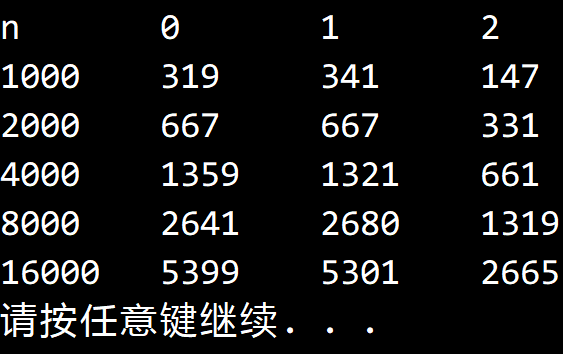

© 2022 《算法（第四版）》C# 题解 | Provided By 沈星繁
搜索解答
目前已完成到 3.2
2.3.7
上次更新：2022-02-18
发现了题解错误/代码缺陷/排版问题？请点这里：如何：提交反馈 。
解答
我讨厌数学= =
证明：
我们设 代表将 个不重复元素排序时大小为 0 的数组的数量。
同理有 和 代表大小为 1 的数组的数量以及大小为 2 的数组的数量。
设 k 代表切分位置，显然切分位置随机且概率相等，在 1~n 之间均匀分布。
根据条件， 都满足下式：
根据快速排序算法， ，因此
同理代入 有
相减
利用累乘法求到通项公式
对于 ，我们有初始条件
对于 ，我们有初始条件
对于 ，我们有初始条件
结论
实验结果：

代码
QuickSortAnalyze 类，添加了三个属性用于计算数组数量。
using System;
using System.Diagnostics;
namespace Quick
{
/// <summary>
/// 自动记录比较次数以及子数组数量的快速排序类。
/// </summary>
public class QuickSortAnalyze : BaseSort
{
/// <summary>
/// 比较次数。
/// </summary>
public int CompareCount { get; set; }
/// <summary>
/// 是否启用打乱。
/// </summary>
public bool NeedShuffle { get; set; }
/// <summary>
/// 是否显示轨迹。
/// </summary>
public bool NeedPath { get; set; }
/// <summary>
/// 大小为 0 的子数组数量。
/// </summary>
public int Array0Num { get; set; }
/// <summary>
/// 大小为 1 的子数组数量。
/// </summary>
public int Array1Num { get; set; }
/// <summary>
/// 大小为 2 的子数组数量。
/// </summary>
public int Array2Num { get; set; }
/// <summary>
/// 默认构造函数。
/// </summary>
public QuickSortAnalyze()
{
this.CompareCount = 0;
this.NeedShuffle = true;
this.NeedPath = false;
this.Array0Num = 0;
this.Array1Num = 0;
this.Array2Num = 0;
}
/// <summary>
/// 用快速排序对数组 a 进行升序排序。
/// </summary>
/// <typeparam name="T">需要排序的类型。</typeparam>
/// <param name="a">需要排序的数组。</param>
public override void Sort<T>(T[] a)
{
this.Array0Num = 0;
this.Array1Num = 0;
this.Array2Num = 0;
this.CompareCount = 0;
if (this.NeedShuffle)
Shuffle(a);
if (this.NeedPath)
{
for (int i = 0; i < a.Length; i++)
{
Console.Write(" ");
}
Console.WriteLine("\tlo\tj\thi");
}
Sort(a, 0, a.Length - 1);
Debug.Assert(IsSorted(a));
}
/// <summary>
/// 用快速排序对数组 a 的 lo ~ hi 范围排序。
/// </summary>
/// <typeparam name="T">需要排序的数组类型。</typeparam>
/// <param name="a">需要排序的数组。</param>
/// <param name="lo">排序范围的起始下标。</param>
/// <param name="hi">排序范围的结束下标。</param>
private void Sort<T>(T[] a, int lo, int hi) where T : IComparable<T>
{
if (hi - lo == 1)
this.Array2Num++;
else if (hi == lo)
this.Array1Num++;
else if (hi < lo)
this.Array0Num++;
if (hi <= lo) // 别越界
return;
int j = Partition(a, lo, hi);
if (this.NeedPath)
{
for (int i = 0; i < a.Length; i++)
{
Console.Write(a[i] + " ");
}
Console.WriteLine("\t" + lo + "\t" + j + "\t" + hi);
}
Sort(a, lo, j - 1);
Sort(a, j + 1, hi);
}
/// <summary>
/// 对数组进行切分，返回枢轴位置。
/// </summary>
/// <typeparam name="T">需要切分的数组类型。</typeparam>
/// <param name="a">需要切分的数组。</param>
/// <param name="lo">切分的起始点。</param>
/// <param name="hi">切分的末尾点。</param>
/// <returns>枢轴下标。</returns>
private int Partition<T>(T[] a, int lo, int hi) where T : IComparable<T>
{
int i = lo, j = hi + 1;
T v = a[lo];
while (true)
{
while (Less(a[++i], v))
if (i == hi)
break;
while (Less(v, a[--j]))
if (j == lo)
break;
if (i >= j)
break;
Exch(a, i, j);
}
Exch(a, lo, j);
return j;
}
/// <summary>
/// 打乱数组。
/// </summary>
/// <typeparam name="T">需要打乱的数组类型。</typeparam>
/// <param name="a">需要打乱的数组。</param>
private void Shuffle<T>(T[] a)
{
Random random = new Random();
for (int i = 0; i < a.Length; i++)
{
int r = i + random.Next(a.Length - i);
T temp = a[i];
a[i] = a[r];
a[r] = temp;
}
}
/// <summary>
/// 比较第一个元素是否小于第二个元素。
/// </summary>
/// <typeparam name="T">要比较的元素类型。</typeparam>
/// <param name="a">第一个元素。</param>
/// <param name="b">第二个元素。</param>
/// <returns></returns>
new protected bool Less<T>(T a, T b) where T : IComparable<T>
{
this.CompareCount++;
return a.CompareTo(b) < 0;
}
}
}主方法
using System;
using Quick;
namespace _2._3._7
{
/*
* 2.3.7
*
* 在使用快速排序将 N 个不重复的元素排序时，
* 计算大小为 0、1 和 2 的子数组的数量。
* 如果你喜欢数学，请推导；
* 如果你不喜欢，请做一些实验并提出猜想。
*
*/
class Program
{
static void Main(string[] args)
{
// 证明
// 我们设 C0(n) 代表将 n 个不重复元素排序时大小为 0 的数组的数量。
// 同理有 C1(n) 和 C2(n) 代表大小为 1 的数组的数量和大小为 2 的数组的数量。
// 设 k 代表切分位置，显然切分位置随机且概率相等，在 1~n 之间均匀分布。
// 根据条件，三者都满足下式。
// C(n) = 1/n sum(C(k - 1) + C(n - k)), k=1,2,...,n
// 显然 sum(C(k - 1)) = sum(C(n - k)), k=1,2,...,n
// 于是可以化简为
// C(n) = 2/n sum(C(k - 1)), k=1,2,...,n
// nC(n) = 2 * sum(C(k-1)), k=1,2,...,n
// 同理有
// (n-1)C(n-1) = 2 * sum(C(k-1)), k = 1,2,...,n-1
// 相减得到递推式
// nC(n) - (n-1)C(n-1) = 2*C(n-1)
// C(n) = (n+1)/n * C(n-1)
// 利用累乘法可以求得通项公式
// C(n)=C(k)*(n+1)/(k+1), n>k
// 对于 C0 有 C0(0)=1, C0(1)=0
// C0(2)=C(0)+C(1)=1
// C0(n)=(n+1)/3, n>2
// 对于 C1 有 C1(0)=0, C1(1)=1
// C1(2)=C1(0)+C1(1)=1
// C1(n)=(n+1)/3, n>2
// 对于 C2 有 C2(0)=C2(1)=0, C2(2)=1
// C2(3)=1/3*2*(C2(0)+C2(1)+C2(2))=2/3
// C2(n)=C2(3)*(n+1)/4=(n+1)/6, n>3
// 结论
// C0(n)=C1(n)=(n+1)/3, C2(n)=(n+1)/6
int n = 1000;
QuickSortAnalyze sort = new QuickSortAnalyze();
Console.WriteLine("n\t0\t1\t2");
for (int i = 0; i < 5; i++)
{
int[] a = new int[n];
for (int j = 0; j < n; j++)
{
a[j] = j;
}
SortCompare.Shuffle(a);
sort.Sort(a);
Console.WriteLine(n + "\t" + sort.Array0Num + "\t" + sort.Array1Num + "\t" + sort.Array2Num);
n *= 2;
}
}
}
}另请参阅
Quick 库
What is the expected number of subarrays of size 0, 1 and 2 when quicksort is used to sort an array of N items with distinct keys?-Stack Overflow